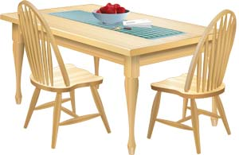
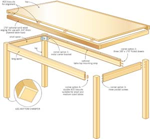
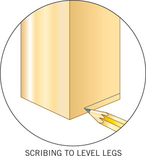
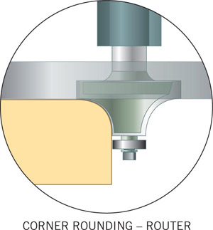
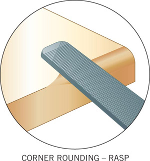
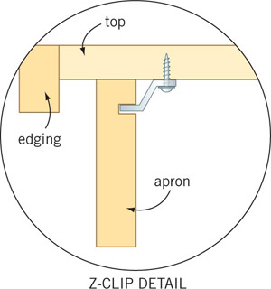
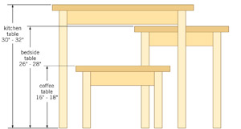

Want a great table? Build it yourself! Thanks to innovations in construction materials, joinery systems and wood finishes, it’s never been easier to make a durable, beautiful and inexpensive wooden table in just one weekend.
Every table has at least three kinds of parts: legs, aprons and a top. But before you begin preparing any of these, start with some design work. When it comes to the height, width and length of your table, you’ll find it helpful to remember a few standard dimensions as you sketch ideas and refine your design. Most kitchen tables are about 30 to 32 inches high. Width should be at least 34 inches, with 34 to 38 inches of perimeter length for each person’s seating comfort. A coffee table is usually 16 to 18 inches high; a bedside table works well at 26 to 28 inches tall.
Click here for a downloadable illustration of the table dimensions.
The thickness of the tabletop depends on the material you are using and the size of the table being built. Three-quarter-inch-thick plywood makes a pretty good tabletop for most applications, though it does look thin on large designs. If you are using dimension lumber, three-quarter-inch thick is good for small tables - up to about 18 by 24 inches; 1-inch lumber is fine for medium size tables, up to approximately 24 by 36 inches. Anything larger should be 1 1⁄4 to 1 1⁄2 inches thick.
Click here to view the downloadable construction illustration of four examples of joining the table legs to the apron pieces, plus detail on attaching the legs and top.
You can choose from several potential tabletop materials. The one that makes the most sense depends on the tools and skills you have, the size of table you’re planning to construct and your preferences for the design.
Veneered plywood and particleboard offer the easiest way to build a tabletop because these sheet materials come ready to finish after just a light sanding. Building supply outlets will even cut sheets to your specifications - a big help if you don’t own a table saw. On the downside, fancy veneered plywood is often more expensive than a similar amount of rough-cut lumber, and it isn’t commonly available in thicknesses greater than three-quarters of an inch. That’s too thin for the best appearance on all but the smallest tables, though there’s a way to make plywood look a lot thicker than it really is.
Depending on the style of table you’re building and the type of veneered sheet material you’re using, you’ll probably have to hide exposed lamination lines that are visible along the edges by gluing on strips of solid wood or applying iron-on wood veneer tape. You also can make any plywood or veneered particleboard tabletop look thicker by gluing wider, thicker strips of solid wood along the edges.
Want the convenience of plywood while avoiding the need to apply edging? Take a look at Baltic birch plywood. Its all-hardwood composition and lack of internal gaps allows the edges of this material to be routed and finished without hiding the edges. You’ll still see lamination lines, but they look pretty good in modern designs.
A solid wood tabletop is the traditional approach, and solid wood has a lot to offer. Besides a firm and weighty presence, it is durable and can be sanded and refinished many times. The work of building with it involves gluing pieces of wood together on their edges, then cutting the assembly to length and width after sanding all joints flat and smooth. The main challenge you’ll face is refining the joints between boards so they come together gap-free. A few minutes of work with a stationary jointer is one option. You could also plane the joints freehand, gaining experience with this timeless woodworking skill.
Use carpenter’s glue and pipe clamps to hold tabletop boards together. When the glue has dried, use a belt sander to smooth the joints. Work across the grain with an 80-grit belt until the entire tabletop is level, then switch orientation so you’re sanding parallel to the grain. Switch to a 120-grit belt (also used parallel to the grain), then a random orbit or finishing sander with a 180-grit abrasive for final smoothing.
There are many ways to create legs. One of the simplest approaches uses 2-by lumber sanded smooth, or with corners chamfered (beveled) or rounded with a router. If you’d like to incorporate fancy legs into your design, but don’t have the lathe or the experience to turn wood successfully, consider ready-made table legs. They come in all sizes and styles at reasonable prices.
Large pieces of solid wood make great table legs, but the strength of your table depends more on how they’re joined to neighboring aprons. There’s a lot of stress at these joints, so you need to tackle this part of the construction with an approach that’s suited to the size and purpose of your table.
Every leg-to-apron joint can be safely connected with mortise and tenon or dowel joints, but in many cases this is more difficult and time consuming than necessary. Tables with legs shorter than about 20 inches can be joined to aprons using two #20 biscuits at each joint, a couple of pocket screws, or three-eighths-inch-diameter by 1 1⁄2-inch-long fluted dowels.
Got a big table that you also want to be able to take apart? Consider metal corner brackets. Standard designs include a bent sheet metal bracket that fits into grooves sawn into the inside faces of aprons, near the ends. These brackets then fit over hanger bolts installed in the inside corner of each leg, held in place with nuts and washers that bind everything together. This system is simple because no joinery details are required. And you can take them apart for easy transport. The ends of the aprons are just cut square and held firmly to the legs by the corner brackets. (Read Woodworking Basics to learn about dowel, biscuit and pocket screw joinery.)
Your table will look best if you set the aprons back from the outside faces of the legs one-eighth to one-quarter inches. This is called a “reveal,” and it eliminates the need for a perfectly flush fit across these joints while also creating shadow lines that boost visual interest. Metal corner brackets automatically create a reveal, but you’ll need to build this feature in if you’re using dowels, biscuits or pocket screws.
There are several ways to attach the top to the apron, and the best method depends on how your tabletop is made. Veneered plywood and particleboard tops remain dimensionally stable as airborne humidity changes; this means they can be anchored firmly, without allowances for seasonal expansion and contraction. The table plan to the left shows how three-quarter-by-three-quarter-inch strips of wood are anchored to the inside faces of table aprons, allowing screws to be driven up into the underside of the tabletop. Just be careful to choose screw length correctly. Too short and the screws won’t hold properly; too long and you’ll see screws that splintered through your carefully sanded top.
You might succeed using cleats and screws to secure a small, solid wood table top, but wood any wider than about 12 inches will probably crack or warp in time if you fasten it without allowing the opportunity for seasonal wood movement. Depending on where you live, a typical tabletop can expand and contract more than a quarter inch each year, and this is where something called a Z-clip can help. It’s a small, inexpensive piece of metal hardware that you screw to the underside of the table, while also interlocking with a groove cut with a table or circular saw into the inside face of the aprons. These clips hold the tabletop firm, yet allow it to expand and contract. Installing them every 8 to 12 inches is fast and easy.
Most tables do best with a durable finish that forms a protective film on the wood, but creating smooth results that enhance wood grain depends on choices and techniques that may not be obvious. While dark stain can make the wood more attractive, it also means that wear and scratches show up more prominently than if wood is left to its natural color before sealing. It’s a trade-off to consider now.
You’ll find it easier to finish parts separately if you take the table apart as much as possible given your design. Three coats of polyurethane offer excellent protection for most tables, but you need to sand between coats for smooth results.
After the first coat dries completely, your wood will be noticeably rougher than before. That’s because surface fibers that had been lying down stood up as the finishing liquid soaked in, then dried that way. Use 220- or 240-grit sand paper to remove this “raised grain,” then wipe or vacuum the entire table before coating again and resanding. Apply the third coat of urethane, let it dry, then smile. You’ve launched a piece of furniture into history that’s useful, attractive and all your own.
Chances are quite good that your new table won’t sit perfectly steady on a flat floor immediately after assembly. The slightest twist in the aprons or variation in joinery details may leave your table wobbling. But fixing it is easy. Just shim up the legs so the table sits still, then lay a sharp pencil flat on the floor and drag its tip all around the outside of each leg. This is called scribing, and it marks the spot where each leg needs to be cut to create a stable table. Just remember to complete the operation on a floor that you know is flat. After you’re done cutting, chamfer the bottom ends of the newly-trimmed legs. This helps prevent splintering if the table ever gets dragged across the floor.
|
 LEN CHURCHILL In one weekend you can build a sturdy, useful kitchen table. |
 LEN CHURCHILL Here are four examples of joining the table legs to the apron pieces, plus detail on attaching the legs and top. Click here for an enlarged image. |
 LEN CHURCHILL Scribing to level legs |
|
 LEN CHURCHILL Corner-rounding router: The finish on table top edges and corners always wears out faster than other areas because pressure from wiping and day-to-day use is concentrated there. You’ll enjoy the longest-lasting table finish if you round all sharp edges and corners during construction. Use a router if you like a refined effect. |
 LEN CHURCHILL Use a rasp to round the edges of the table if you prefer a handmade look. |
 LEN CHURCHILL z-clip detail |
|
 LEN CHURCHILL Coffee, bedside or kitchen tables are easy to build using just legs, aprons and a top. Click here for an enlarged image. |
|
|